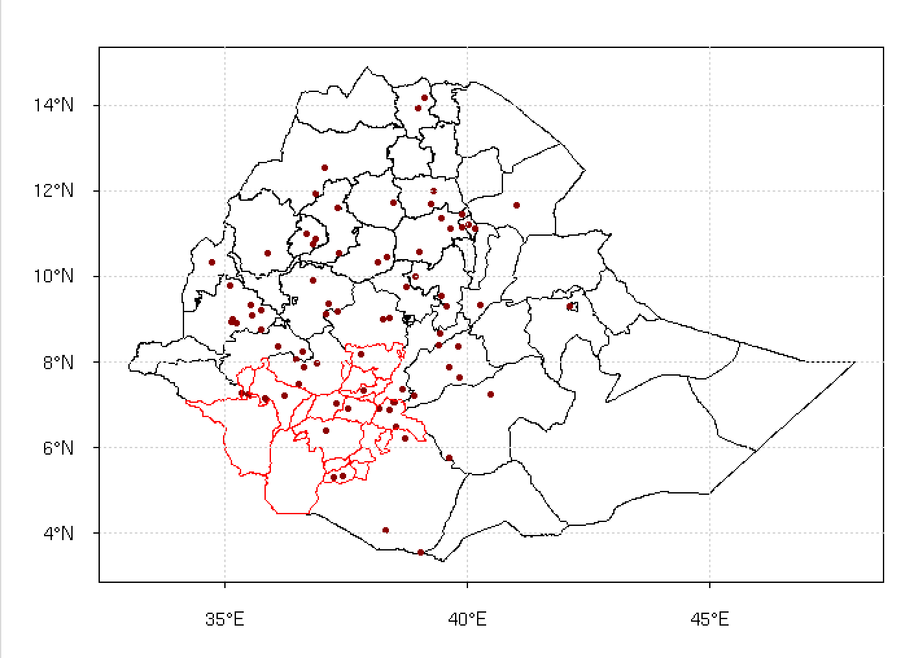

Validation
The menu allows to compare satellite rainfall products and merged data products from CDT (rainfall and temperature) with station measurements using statistical indicators. To perform validation for precipitation, go to the sub-menu and to the sub-menu for temperature. A tabbed panel will be activated on the left panel, it gives you a way to enter the input, set all parameters, display map to select the area of interest, calculate the statistics to be used to evaluate the gridded data and display the results.
The first tab General is dedicated to the required input files and directory and output directory.
- Select the time step of the data.
- Select the file containing the station validation data. If the file is not yet listed, use the button to open it.
- Enter the full path to directory containing the gridded NetCDF files, or use to browse it.
- Provide a sample file from the gridded data by selecting it from the drop-down list or open it by using the button .
- Specify the gridded data filename format. See the section NetCDF filename format for more details on the format of NetCDF file names.
- Enter the full path to directory to save the validation output, or browse it from .
The tab Select Stations allows to select the station to be used to perform the validation.
- There are three ways to select the stations to be used to do the validation:
- All Stations: all the stations from the input station data file will be used.
- Rectangle: the stations can be selected by drawing a rectangle over the desired region.
- Polygons: the stations can be selected by choosing one polygon or a set of polygons representing a administrative boundaries.
- If you want to select the stations to be used to do the validation from a map (in case of Rectangle or Polygons), provide here the ESRI shapefiles, or use to open it if not yet listed.
- Select the attribute to be displayed on the map and to be used to select the station in case of Polygons.
- In case of Polygons, if you do not want to select the polygons from the map, scroll down the list to select the administrative division name of the polygons within it the station will be used to do the validation.
After you have provided the shapefile in (2), you can click on to display the map in the right panel.
When you move the mouse over the map, the current position of the cursor will be displayed in the status bar. X: longitude, Y: latitude and Z: the name of the corresponding administrative division.
If you see that the administrative division name displayed is not what you want, you can always change the subdivision level in (3).
- Click on before you draw a rectangle or select a polygons by clicking on the map. When this button turns red, you can proceed to the operation on the map.
Rectangle selection

Polygons selection - When you draw a rectangle on the map, its spatial extent will be shown here. In addition, if you know in advance the range of the region, you can directly enter here the minimum/maximum longitude/latitude of your area of interest.
- Zoom tools: to activate the zoom click on these buttons, when the button turns red, you can proceed the zooming on the map. To deactivate the zoom right-click anywhere on the map.
 zoom in
zoom in- zoom out
- drag a rectangle to zoom in a rectangular region
- move the map by clicking and holding the left mouse button and dragging the map to a new place
- reset the zoom
The tab Validation allows to specify the period and season to perform the validation, to calculate the statistics to be used to evaluate the gridded data, and to display the results.
- Enter the start and end year of the period to calculate the validation statistics.
- Select the start and end month of the season to calculate the validation statistics.
- Select the type of data to calculate statistics:
- All Data: use all data from station without aggregation
- Spatial Average: the station will be spatially averaged before the computation of the statistics.
- Click on to calculate the validation statistics.
- Click on to display table of the calculated statistics.
- Click on to display a scatter plot.
7. Click on to display a cumulative density function (CDF).
OUTPUT: Under the directory you specified to save the result, a directory called Validation_<Input station data filename without extension> has been created. 8 files have bean created under this directory:
- STN_GRD_Validation_Statistics.txt: the validation statistics.
- For dekadal and monthly precipitation data and temperature data, five continuous statistics indicators are used: Pearson correlation coefficient, Nash-Sutcliffe Efficiency, Bias, Mean Error and Mean Absolute Error.
- For daily precipitation data, in addition to the 5 continuous statistical indicators, another five categorical statistics indicators were used to assess rain detection capabilities: Probability Of Detection, False Alarm Ratio, Frequency Bias, Critical Success Index and Heidke Skill Score.
- STN_GRD_VALIDATION_DATA.txt: the data from the selected station during the period and season that you defined, and used to calculate the statistics and plot the empirical cumulative distribution function and scatter plot. The first column is the station ID, the second column is the date, the third column the station data and the last column corresponds to the gridded data extracted at station locations.
- STN_GRD_SCATTER_PLOT.jpg: scatter plot
STN_GRD_ECDF_PLOT.jpg: cumulative density function plot
- Spatial_Average_Validation_Statistics.txt: same as the above-mentioned statistics.
- Spatial_Average_STN_GRD_VALIDATION_DATA.txt: containing the data spatially averaged for the selected station during the period and season that you defined, and used to calculate the statistics and plot the empirical cumulative distribution function and scatter plot. The first column is the date, the second column the station data and the third column corresponds to the gridded data extracted at station locations.
- Spatial_Average_STN_GRD_SCATTER_PLOT.jpg: scatter plot
Spatial_Average_STN_GRD_ECDF_PLOT.jpg: cumulative density function plot